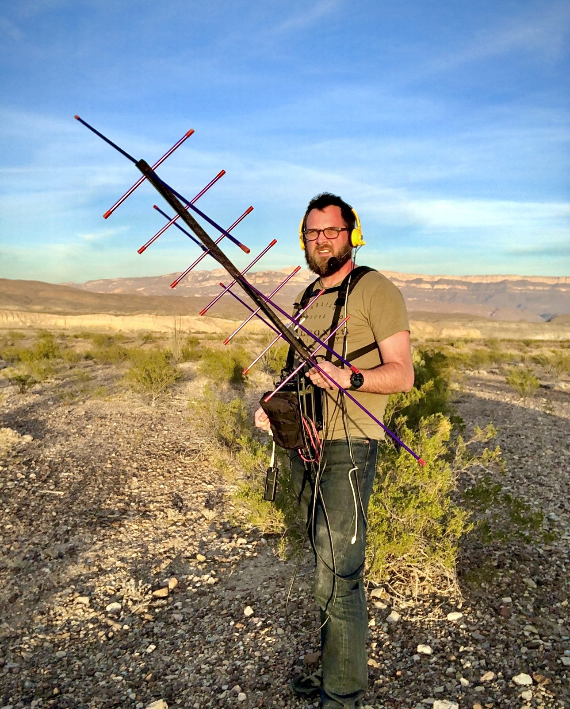
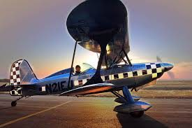
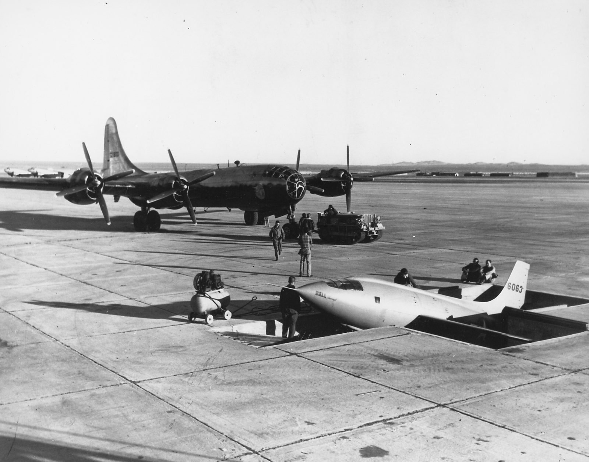
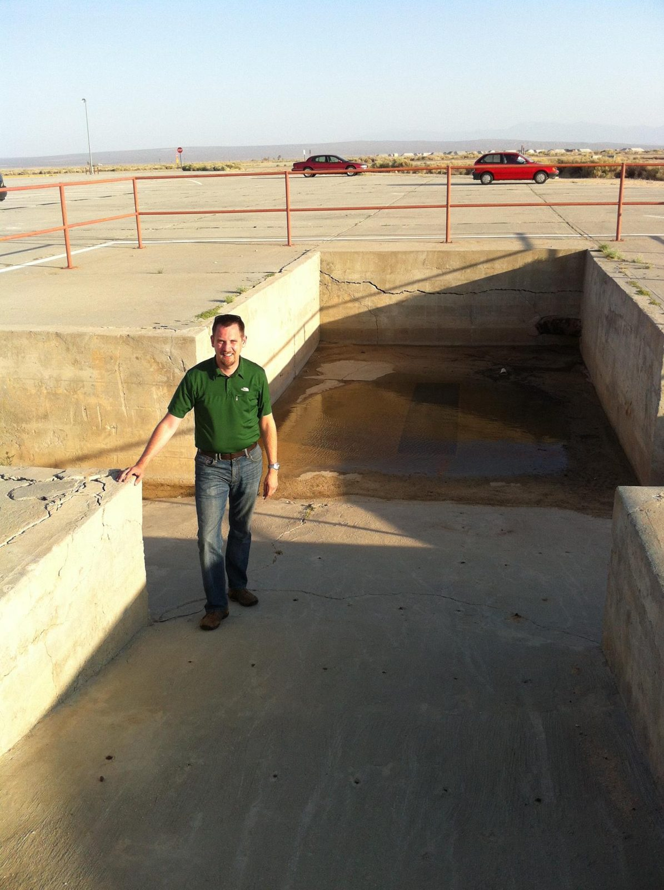
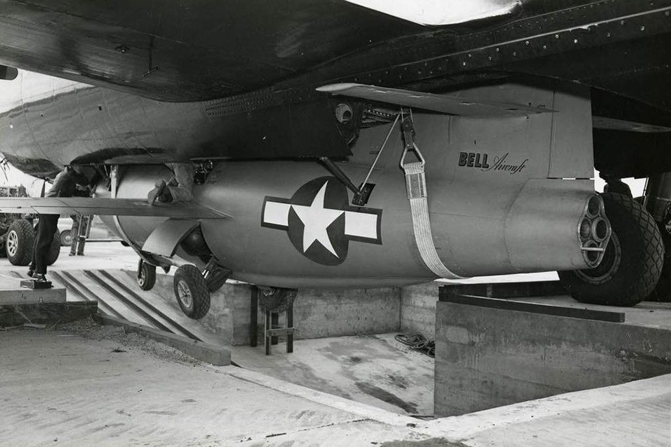
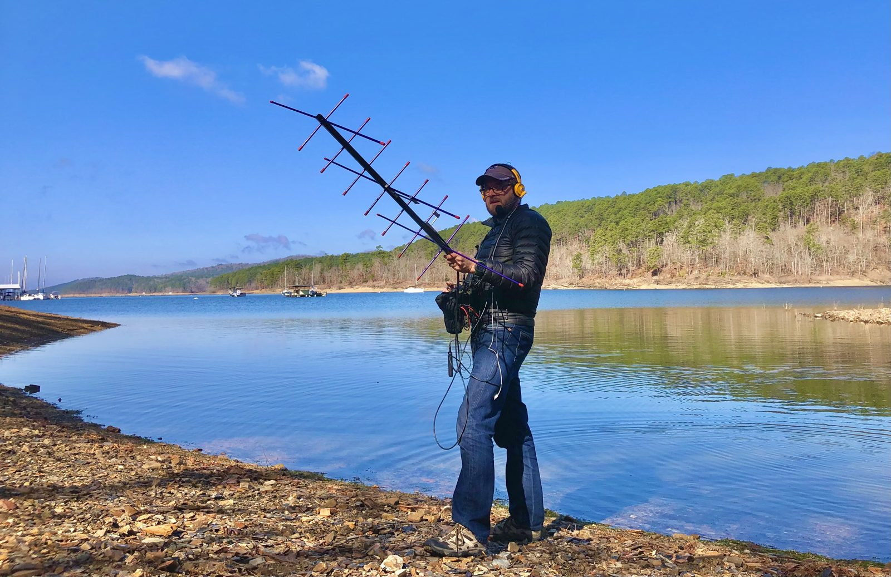
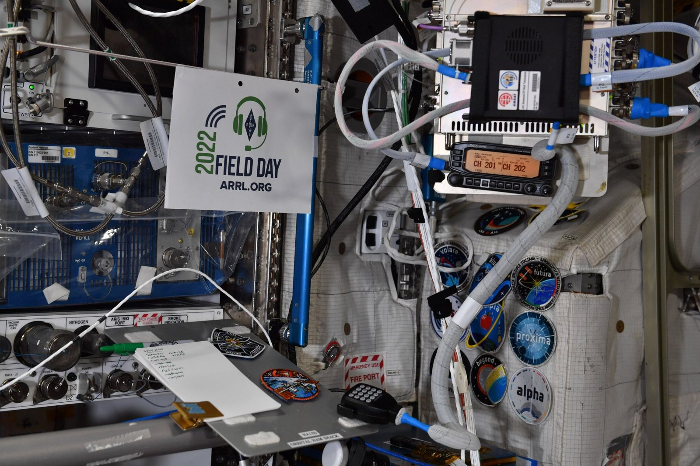
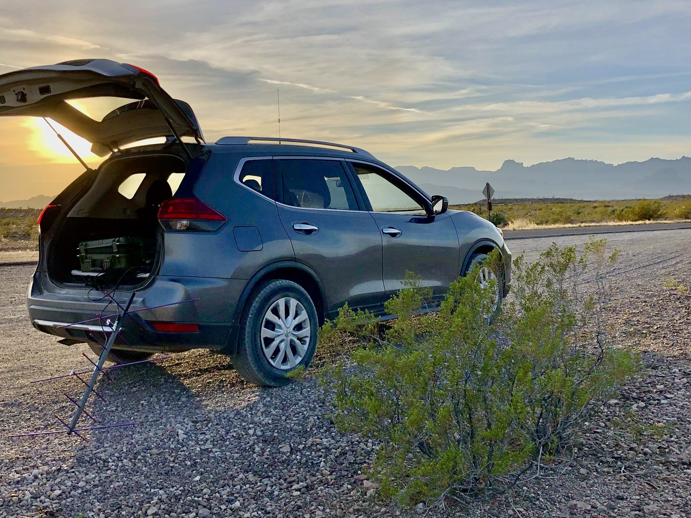
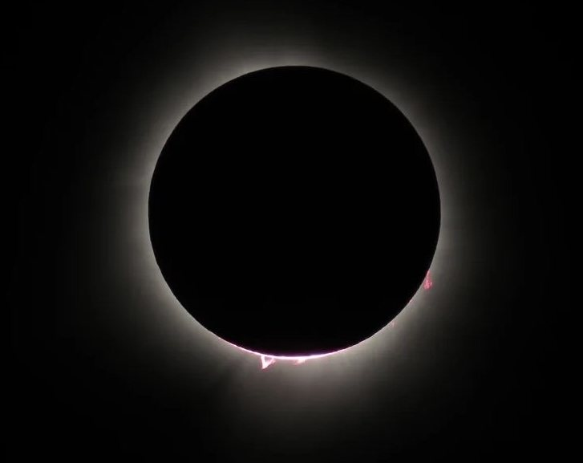
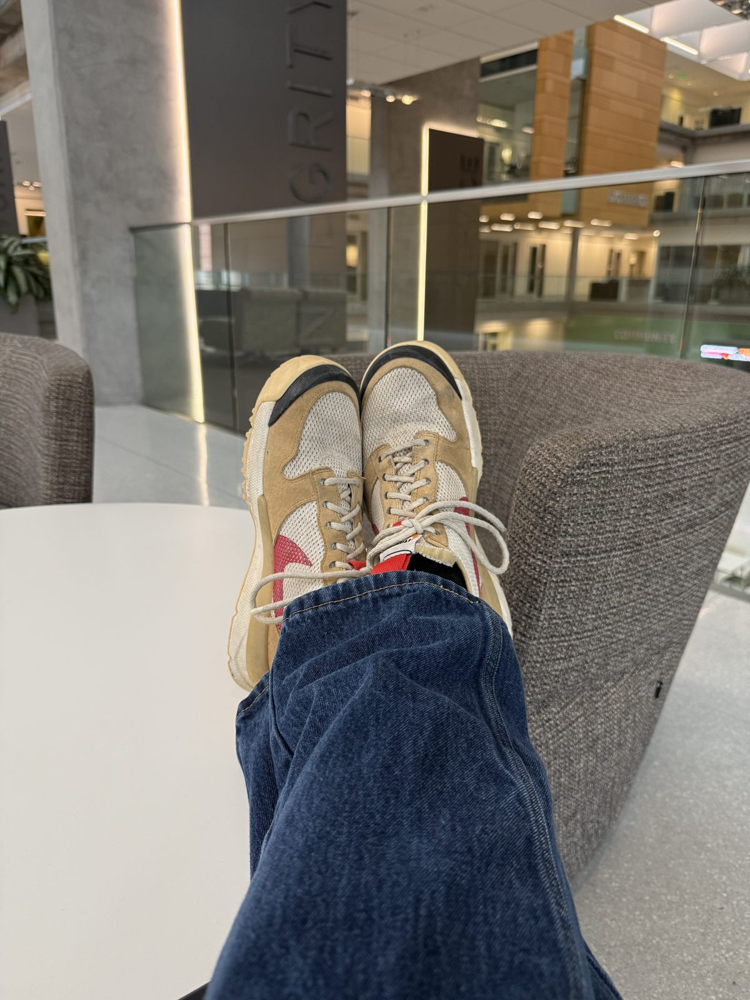

Aerobatic pilot before his first touch-and-go. Balloonist to 100,255 feet. Portable satellite operator, foamboard aerospace engineer, and the reason a pair of Nike Mars Yards has been to the stratosphere. Rankings one through six remain under review.
The name isn't marketing. N21EJ, a Stolp Starduster Too — open cockpit, checkerboard cowl, lightning-bolt trim — was the first airplane Josh ever flew, and she taught him upside down: aerobatics before he'd ever flown a touch-and-go. When the balloon program needed a name, there was only ever one candidate. Every payload that climbs out of a Texas field carries hers.

In 1947 at Muroc, the X-1 was too low-slung to hitch under its B-29 mothership on flat ground — so they dug a pit, rolled the rocket plane down a ramp, towed the bomber over the top, and winched history up into the bomb bay. The sound barrier program staged out of a hole in the desert. Josh made the pilgrimage. Starduster flies in that tradition: higher on ingenuity than on budget, staged from whatever concrete is available.



General class, and the license gets used: Josh works amateur satellites by hand — crossed yagi, chest-mounted rig, tracking low-Earth-orbit passes on foot from deserts, lakeshores, and anywhere the grid square is worth activating. Every Starduster flight rides on that RF experience: APRS beacons with polite zero-hop paths, redundant trackers, and footprint math done before the fill valve opens.

During ARRL Field Day 2022, W3ARD made an unscheduled contact with the amateur station aboard the International Space Station — and the astronauts' own log sheet, callsign checked off in green marker, happened to be in frame when the crew tweeted their Field Day photos from orbit. Documented range of this station: low Earth orbit. Sometimes it's better to be lucky than good; it helps to be both.

The program deploys out of whatever's in the driveway. Pelican case, yagi, coffee, and a prediction from the Pre-Flight tool. The balloon does not care about your schedule; the chase vehicle has learned not to either.

When the April 2024 total eclipse ran its path straight over central Texas, the program's cameras pointed up from home turf. Totality, corona, and solar prominences — captured with the same care as any flight. Some missions come to you.


Email: Josh_Ward at me dot com
Instagram: @bujw
X/Twitter: @W3ARDstroke5
On the air: W3ARD, when the pass is up.